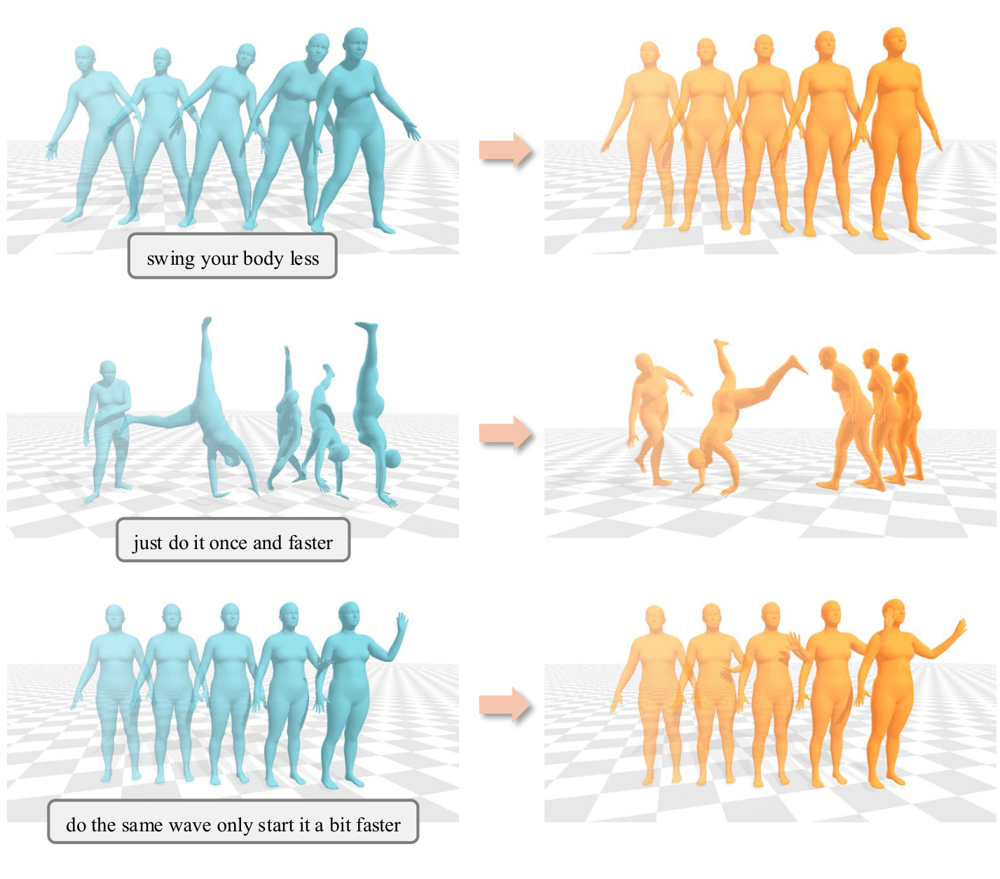
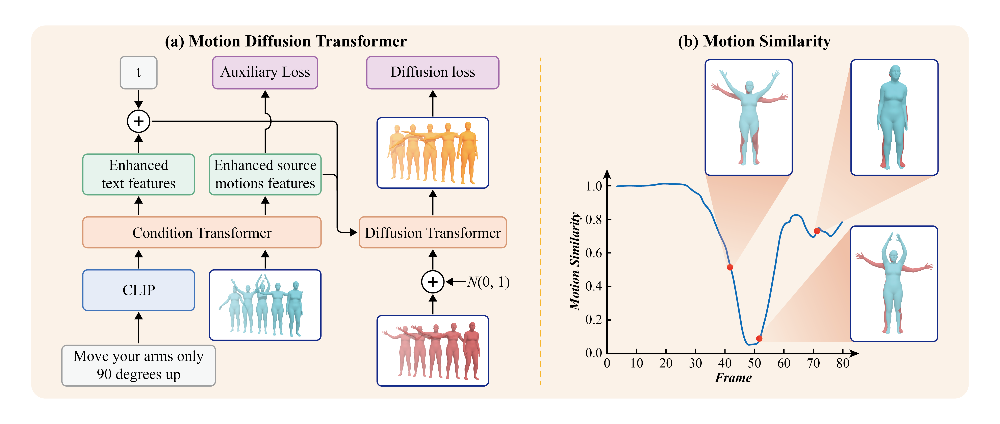
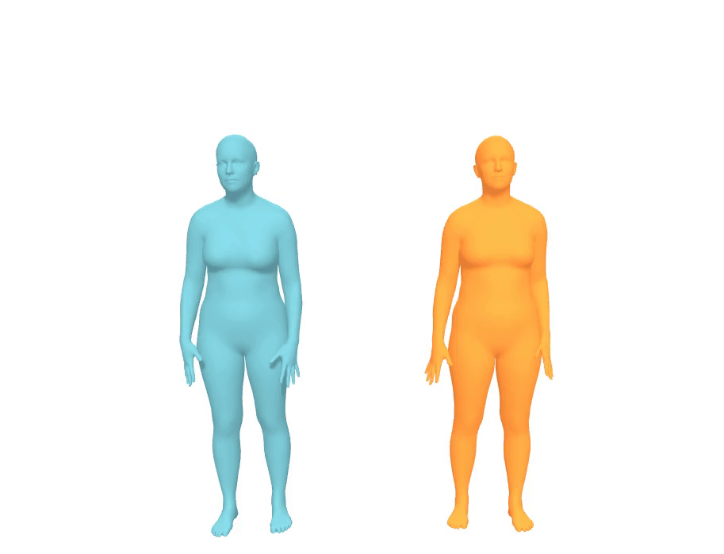

SimMotionEdit: Text-Based Human Motion Editing with
Motion Similarity Prediction



Abstract
Text-based 3D human motion editing is a critical yet challenging task in computer vision and graphics. While training-free approaches have been explored, the recent release of the MotionFix dataset, which includes source-text-motion triplets, has opened new avenues for training, yielding promising results. However, existing methods struggle with precise control, often leading to misalignment between motion semantics and language instructions. In this paper, we introduce a related task, motion similarity prediction, and propose a multi-task training paradigm, where we train the model jointly on motion editing and motion similarity prediction to foster the learning of semantically meaningful representations. To complement this task, we design an advanced Diffusion-Transformer-based architecture that separately handles motion similarity prediction and motion editing. Extensive experiments demonstrate the state-of-the-art performance of our approach in both editing alignment and fidelity.
Method
Our novelty is proposing a multi-task training framework to improve the model's editing ability.
Our auxiliary task of motion similarity prediction follows the intuition that to edit a motion, the model must first identify the parts that need editing. Put differently, given the source and the edited motions, it should quantify the similarities between them. We show an instance of motion similarity curve in (b).
We illustrate our network architecture, the Motion Diffusion Transformer, in (a). It consists of a condition transformer and a diffusion transformer. The condition transformer processes the source motion and the text instructions, and provides enhanced condition features via motion similarity prediction. The diffusion transformer takes in the concatenated sequence of enhanced source motion features and noised edited motion, and uses the enhanced text features as conditions, to generate edited motions. We train the network jointly on motion similarity prediction and diffusion-based motion editing.

Qualitative Results
blue = source motion
orange = edited motion
| do it slower and don't get up | move your arms only 90 degrees up | sit slowly and delay your throwing motions |

|
 |

|
|
just do it once and faster |
keep waving instead of lowering your hands |
walk two small steps ahead and one backwards |

|

|

|
|
do it slower and with the arm raised lower |
don't run and move slower |
don't walk before going down turn 90 degrees to your left at the end of the whole motion |

|

|

|
Failure Cases
| move slower backwards and front kick with left leg | from the previous position, do the following and return back : move right hand up, left hand left, right hand up, both hands forward, right hand forward, clap |

|

|
Citation
@inproceedings{li2025simmotionedit,
title={SimMotionEdit: Text-Based Human Motion Editing with Motion Similarity Prediction},
author={Li, Zhengyuan and Cheng, Kai and Ghosh, Anindita and Bhattacharya, Uttaran and Gui, Liangyan and Bera, Aniket},
booktitle={Proceedings of the IEEE/CVF Conference on Computer Vision and Pattern Recognition},
pages={27827--27837},
year={2025}
}Acknowledgements
The website template was borrowed from Jon Barron and the Open X-Embodiment project.